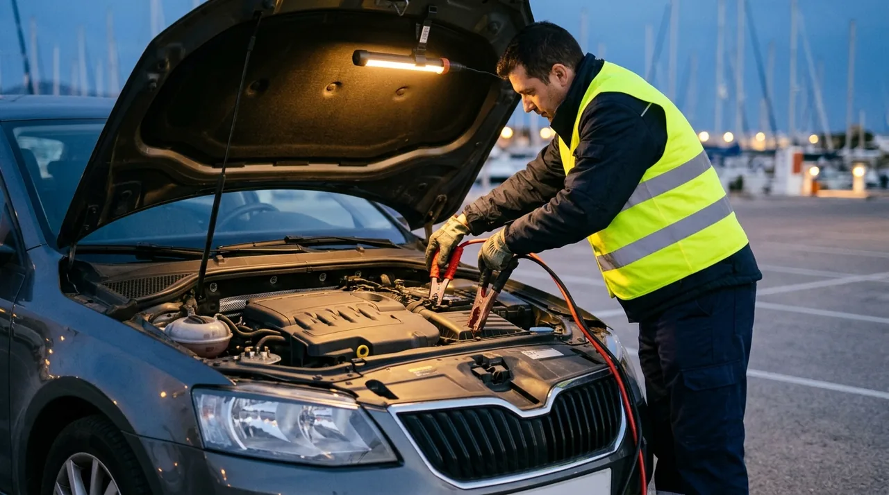

Hakkımızda ve Haritada Çekici Aracımızın Konumu
Korkmaz Oto Kurtarma olarak Güvercinlik Mahallesi'ndeki (37.138014, 27.582321) gerçek bekleme noktamızdan Bodrum ve Milas'ın tüm mahallelerine 7/24 şeffaf ve güvenli yol yardım hizmeti sunuyoruz.

Korkmaz Oto Kurtarma Hakkında
Korkmaz Oto Kurtarma, Muğla'nın iki büyük ve yoğun trafiğe sahip ilçesi olan Bodrum (56 mahalle) ve Milas (132 mahalle) sınır hattında, sürücülerin yolda kaldığı en stresli anlarda hızlı, dürüst ve güvenli çözüm sunmak amacıyla faaliyet göstermektedir.
Bölgedeki pek çok çekici yalnızca tek bir sanayi sitesi içinde beklerken, çekici aracımız Güvercinlik Mahallesi (37.138014, 27.582321) noktasında konumlanmıştır. Bu nokta; Bodrum yarımadasının girişi olan Torba Kavşağı ile Milas-Bodrum Havalimanı (BJV), Boğaziçi (Adabükü), Mumcular ve Güllük kavşaklarının tam merkezindedir.
Temel Çalışma İlkelerimiz
- Gerçek Süre Taahhüdü: Müşteriyi yolda bekletmemek için aracımızın anlık konumuna ve gerçek karayolu kilometresine göre dürüst varış süresi veririz.
- Sürprizsiz Fiyat: Yükleme öncesinde konuşulan ücret neyse teslimatta da odur.
- Hasarsız Taşıma: Binek otomobil, SUV, hafif ticari ve alçak şasi araçlarda uygun kayar kasa açısı ve dört nokta spanzet sabitleme kurallarına titizlikle uyarız.
Haritada Aracımızın Durduğu Yer
Adres: Güvercinlik Mahallesi, 48450 Bodrum / Muğla
GPS Koordinatları: 37.138014, 27.582321
Telefon & WhatsApp: 0537 844 38 81
 Hidrolik Kayar Platform
Hidrolik Kayar Platform
Şanzıman ve Tampon Korumalı Çekim
Otomatik vitesi P konumunda kilitlenen, elektronik el freni bırakmayan veya alçak şasiye sahip araçları sürüklemeden platforma alıyoruz.

7/24 Mobil Yol YardımYerinde Akü Takviyesi ve Stepne Desteği
Aracınız çekici gerektirmeden çalışabilecek durumdaysa bulunduğunuz otopark veya yol kenarında akü takviyesi ve lastik değişimi yapıyoruz.
Haritalardan Web Sitemize Doğrudan Erişim
Apple Haritalar, Google Haritalar ve Yandex Haritalar üzerinden konumumuzu inceleyen sürücüler doğrudan web sitemize (Korkmaz Oto Kurtarma Ana Sayfa) ve 7/24 acil hattımıza bağlanabilir.
Apple Haritalar Kaydımız
iPhone ve CarPlay kullanıcıları 37.138014, 27.582321 Apple Haritalar bağlantısı üzerinden Güvercinlik bekleme noktamızı görebilir ve tek dokunuşla arama başlatabilir.
Google Haritalar Yol Tarifi
Android ve araç içi navigasyon kullanan sürücüler Google Haritalar koordinat bağlantımız ile sitemize ve canlı konum paylaşımına anında erişebilir.
NAP (Ad, Konum, Telefon) Güvencesi
İşletme adımız Korkmaz Oto Kurtarma, merkez mahallemiz Güvercinlik Mah. 48450 Bodrum/Muğla ve hattımız 0537 844 38 81 tüm harita platformlarında birebir aynıdır.
Sıkça Sorulan Sorular
Bölgedeki sürücülerin çekici, yol yardım, ücretlendirme ve varış süreleriyle ilgili en sık sorduğu sorular:
Çekici aracınız tam olarak nerede bekliyor?
Aracımız Muğla Bodrum ilçesine bağlı Güvercinlik Mahallesi'nde (GPS: 37.138014, 27.582321), Milas-Bodrum D330 karayoluna anında çıkış yapabilecek konumda beklemektedir.
Sadece Güvercinlik çevresine mi yoksa tüm Bodrum ve Milas'a mı geliyorsunuz?
Güvercinlik merkez noktamızdan Turgutreis ve Yalıkavak'tan Milas Ören, Güllük ve Bafa Gölü'ne kadar Bodrum'un 56, Milas'ın 132 mahallesinin tamamına 7/24 hizmet veriyoruz.